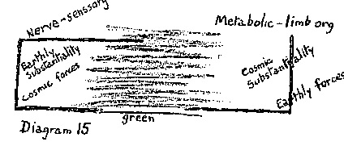
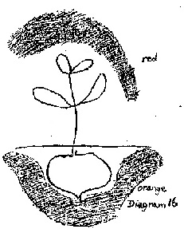
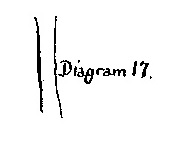
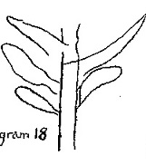

Home
Lecture Number Eight
16th June, 1924.
From stenographic notes not reviewed by the speaker
Translator unknown (edited here)
In this last lecture, I shall try as far as possible to complete what I have already said, and to bring forward certain practical considerations. In the ensuing discussion I shall make such additions as may prove necessary.
The practical hints I propose to deal with today are not such as can be embodied in general formulae, but need to be greatly modified according to the particular situation and the persons applying them. For this very reason it is necessary that you should gain Spiritual-Scientific insight into this sphere, which will enable you intelligently to adapt to the individual case the various steps to be taken. I would ask you to consider how little insight there is into that most important matter, the feeding of our farm animals. Merely to indicate new methods of feeding is not sufficient.
How, then, ought our farm animals to be fed? In my opinion improvement will certainly come if, in the teaching of agriculture, an insight is gained into the essential meaning of feeding as such. This is what I shall try to do today. Completely wrong ideas prevail as to what nutrition signifies both for man and animal. It is not merely the crude process of taking in foodstuffs and, after certain changes, of storing these up in the organism, then excreting what is not needed. This view carries with it the idea, for instance, that the animal should not be overfed, that its food should be as nourishing as possible and thus the bulk of it be utilised. And if we are of a materialistic turn of mind, we like to distinguish between actual foodstuffs and such substances that promote what is called combustion in the organism. We then build up all sorts of theories and put them into practice, finding, as always, that some work and some do not or that they only work for a time, having to be modified in one way or another.
What else indeed could we expect? We speak of processes of combustion in the organism. But no such thing takes place there. The combination of any substance whatever with oxygen in the organism means something quite different from a process of combustion. Combustion is a process which takes place in mineral, inanimate nature, and just as a living organism is something different from a quartz crystal, what is called “combustion” in a living organism is not the same as the dead process of burning, but something which is living and sentient. The mere fact of using words in this way has directed our thoughts along certain channels and has done great mischief. To speak of combustion in the organism is to speak in a slipshod way. This does not matter if, by instinct or tradition, we still retain a right view of the facts. But if these slip-shod expressions are subjected to an attack of “psychopathia Professoralis,” then clever theories begin to be built upon them. If we depend upon these theories, what we do will be hopelessly wide of the mark, for such theories no longer cover the facts of the case. This is characteristic of our times. We are always doing something which does not fit in with what is going on in Nature. In this matter of nourishment, therefore, it is important to learn with what we are really dealing.
Let us recall what I said yesterday about the plant having a physical and etheric body and being more or less surrounded from above by the astral element. The plant does not reach the astral element but is surrounded by it. If the plant enters into a special relation with the astral element, as in the case of the formation of edible fruits, a kind of food is produced which will strengthen the astral element in the animal and human organism. If one can look into this process, the very “habitus” of a plant and so on reveals whether or not it is capable of promoting some process in the animal organism. But we must also consider the opposite pole. Here something of great importance takes place. I have touched on this before, but now that the general principles of nutrition are being established, I must emphasise it still more.
Since we are dealing with feeding, let us start from the animal. In the animal the threefold organism is not so sharply defined as it is in man. The animal has a system of nerve and senses and a metabolic and limb system. These are clearly defined one from the other. But in many animals the limits of the rhythmic system are indefinite; both the nerves and senses system and the metabolic system trespass upon the limits of the rhythmic system. We should therefore choose other terms when we speak of animals. In man one is quite right in speaking of a threefold organism: but in the case of animals one ought to speak of the nerve and senses system as being localised primarily in the head, and of the metabolic and limb system as being in the hind quarters and limbs but at the same time diffused throughout the whole body. In the middle of the body the metabolism becomes more rhythmical as does also the nervous system, and there both flow into one another. The rhythmic system has a less independent existence in the animal. Rather the opposite poles become indistinct as they merge into one another. We should therefore speak of the animal organism as being twofold, the extremes inter-penetrating at the middle.
All the substances contained in the head system — I am speaking of animals, but the same is true of man — are of earthly matter. Even in the embryo, earthly matter is led into the head system. The embryo must be so organised that its head receives its matter from the earth. In the head, therefore, we have earthly matter. But the substances which we bear in the metabolic and limb organisation, those which permeate our intestines, our limbs, our muscles and bones, etc., these substances do not come from the earth but from what has been absorbed from the air and warmth above the earth. It is cosmic substantiality. This is important. When you see an animal's claw, you must not think of it as having been formed by the food which the animal has eaten and which has gone to the claw and been deposited there. This is not the case. It is cosmic matter taken up through the senses and breathing. What the animal eats serves only to stimulate its powers of movement so that the cosmic matter can be driven into the metabolic and limb organisation, then can be driven into the claw and similarly distributed throughout the whole organism.
With forces, as opposed to substances, it is the other way round. Because the senses are centred in the head and take in impressions from the cosmos, the forces in the head are cosmic in nature. To understand what happens in the metabolic and limb organisation, you need only think of walking, which means that the limbs are permeated with earthly gravity; the forces are earthly ones. Thus the limb system contains cosmic substances permeated by earthly forces.
It is extremely important that the cow or the ox, if used for working, should be fed so as to absorb the greatest possible amount of cosmic substance and that the rood which enters its stomach should produce the necessary strength to lead this cosmic substance into its limbs, muscles and bones. It is equally important to realise that the earthly substances in the head have to be drawn from the food which has been worked upon in the stomach and is led into the head. In this sense, the head relies upon the stomach in a way in which the big toe does not, and we must realise quite clearly that the head can only work upon this nourishment, which comes to it from the metabolism, if it can at the same time draw in sufficient cosmic forces. If, therefore, animals, instead of being left in stuffy stables where no cosmic forces can reach them, are led into meadows and given every opportunity of entering into relation with their environment through the perceptions of their senses, then we may see results such as appear in the following examples.
Imagine an animal standing in a dark and stuffy stable before its manger, the contents of which have been measured out by human wisdom. Unless its diet is varied, as it only can be out of doors, this animal will show a very great contrast to one which seeks out its food with its sense of smell, guided by this organ in its search for cosmic forces, seeking and finding its nourishment by itself and developing its whole activity in doing so. An animal that is fed from a manger will not show immediately how devoid it is of cosmic forces, for it has inherited a certain amount of them. But it will breed descendants to whom these cosmic forces are no longer transmitted. Such an animal will become weak, beginning from the head; it will not be able to nourish its body because it cannot absorb the necessary cosmic substances. This will show you that it is not enough simply to say: “This kind of fodder for one case, that for another.” Rather one must have a clear idea of the value for the animal's whole organisation that such and such methods of feeding have.
But we must go a step further. What is actually contained in the head? Earthly substance. If you take out the brain, the noblest part of an animal, you will have before you a piece of earthly substance. The human brain also contains earthly substance. But in both the forces are cosmic. What is the human brain for? It serves as a support for the I. The animal, let it be remembered, has as yet no I; its brain is only on the way to I-formation. In man it goes on and on to the complete forming of the I. How then did the animal's brain come into existence? Let us look at the whole organic process. All of what eventually manifests in the brain as earthly matter has simply been excreted from the organic process. Earthly matter has been excreted in order to serve as a base for the I. Now the processing of the food in the digestive tract and metabolic and limb system produces a certain quantity of earthly matter which is able to enter into the head and to be finally deposited as earthly matter in the brain. But a portion of the food stuff is eliminated in the intestine before it reaches the brain. This part cannot be further transformed and is deposited in the intestine for ultimate excretion.
We come here upon a parallel which will strike you as being very paradoxical but which must not be overlooked if we wish to understand the animal and human organisations. What is brain matter? It is simply the contents of the intestines brought to the last stage of completion. Incomplete brain-excretion passes out through the intestines. The contents of the intestines are in their processes closely akin to the contents of the brain. One could put it somewhat grotesquely by saying that what spreads itself out in the brain is a highly advanced dung-heap. And yet the statement is essentially correct. By a peculiar organic process, dung is transformed into the noble matter of the brain, there to become the foundation for the development of the I. In man the greatest possible quantity of intestinal dung is transformed into cerebral excrement because man bears his I on the earth. In animals the quantity is less. Hence there remain more forces in the intestinal excrement of an animal which we can use for manuring. In animal manure, there is therefore more of the potential I element, since the animal itself does not reach I-hood. For this reason animal dung and human dung are completely different. Animal dung still contains I-potentiality. In manuring a plant, we bring this I-potentiality into contact with the plant's root. Let us draw the plant in its entirety.
Down here you have the root, up there the unfolding leaves and blossoms. And just as above, in the leaves and blossoms, the astral element is acquired from contact with the air, so the I-potentiality develops below in the root through contact with the manure.
The farm is truly an organism. The astral element is developed above, and the presence of orchard and forest assists in collecting it. If animals feed in the right way on the things that grow above the earth, then they will develop the right I-potentiality in the manure they produce, and this I-potentiality, working on the plant from the root, will cause it to grow upwards from the root in the right way according to the forces of gravity. It is a wonderful interplay, but in order to understand it one must proceed step by step.
From this you can see that a farm is a kind of individuality, and that both animals and plants should be retained within this mutual interplay. If, therefore, instead of using the manure supplied by the animals belonging to the farm, we sell off these animals and obtain manure from Chile, we are in a sense doing harm to Nature. In doing this we trespass the bounds of a closed circuit, which should be self-sufficient. Of course, things must be ordered in such a way that the circuit really is self-contained. One need only have on the farm as many animals and of such kinds as will supply sufficient and appropriate manures. And one must also see to it that the animals have such plants to eat as they like and seek instinctively.
At this point experiments tend to become complicated because every case is different. But the main thing is to know the directions which the experiments should take. Practical rules will be found, but they should all proceed from the principle that a farm should be, as far as possible, self-contained. I say as far as possible because Spiritual Science takes a practical not a fanatical view of things. Under our present economic order this cannot be fully attained; but the ideal is one which we should make every effort to reach.
On this basis, then, we can find concrete instances of the relation between the organism formed by livestock and the plant or “fodder organism.” Let us first consider this relation in broad general lines.
To begin with, the root. The root generally develops in the soil and through the manure it becomes permeated with ego-potentiality, which it absorbs. This absorption is determined and aided if the root can find salts in the right quantities in the soil around it. Let us assume that we are considering the nature of these roots merely from the point of view of the foregoing reflections. Then we shall suggest that roots are the food which, when it is absorbed into the human organism, will find its way most easily to the head by way of the digestive process. We shall therefore provide a diet of roots when we require to give the head material substances to enable the cosmic forces which work through the head to exercise their plastic activity. Imagine someone saying to himself: “I must give roots to this animal which requires earthly substance in its head in order to stimulate its sense-connections with its environment, that is, with the cosmic environment.” Does not this immediately suggest the calf and the carrot? A calf eating carrots portrays this whole process. The moment something like this is put forward and you know how things really are and their true connections, you will know immediately what is to be done. It is simply a matter of realising how this mutual process works.
But let us proceed to the next stage. Once the calf has eaten the carrot, once the substance really has been introduced into the head, the converse process must be able to begin: the head must begin to work with forces of volition, thus begetting within the organism forces which can be worked into it. It is not enough for the “carrot dung” to be deposited in the head; from what is deposited and in the course of disintegration, streams of force must come which will enter the rest of the organism. In short, there must be a second food substance which will enable one part of the body which has already been fed (in this case the head) to work in the right way on the rest of the organism.
Well, I have given the animal the carrot fodder. And now I want the animal's body to be permeated with the forces which are developed from the head. For this, as a second fodder, we need a plant with a spindly structure, the seed of which will have gathered into itself these “spindly” forces. We immediately think of flaxseed (linseed) or something similar. If you feed young cattle on carrots and linseed — or carrots and fresh hay (which is equally suitable) — this will bring into full operation the forces already latent in the animals. We should therefore try to give young cattle food which promotes, on the one hand, the forces of I-potentiality, and, on the other, the complementary streams of astral force working from above downwards. For the latter purpose, those plants are especially suitable which have long, spindly stems and as such have been turned into hay.
Just as we have looked into this concrete case so we must approach agriculture as a whole: of every single thing, we must know what happens to it when it passes either from the animal into the soil, or from the plant into the animal.
Let us pursue the subject yet further. Let us take the case of an animal which should become particularly strong in the middle region, where the head or nervous organisation tends to develop in the direction of breathing and the metabolic organisation tends to have a rhythmic character. Which animals have to be strong in this particular region? They are the milch animals. The secretion of milk shows that the animal in question is strong in this region. The point to observe here is that the right co-operation should take place between the current going from the head backwards (mainly a streaming of forces) and the current going from the animal's hind quarters forward (mainly a streaming of substance). If these two currents co-operate and intermingle in the right way, the result will be an abundant supply of rich milk. For good milk contains substances prepared in the metabolic system and which, without having entered into the sexual system, have become akin to it. It is a sexual process within the metabolic system. Milk is simply a sexual secretion on another level. It is a substance which, on its way to becoming sexual secretion, is penetrated and transformed by the forces working from the head. The whole process can be seen quite clearly.
Now for processes which should arise in this way, we must choose a diet which will work less powerfully towards the head than do roots which contain I-potentiality; neither may the diet, since it is to be connected with the sexual system, contain too much of the astral element, of that which goes towards the blossom and fruit of the plant. In short, if we wish to find a diet that will produce milk, we must choose the part of the plant which lies between blossom and root, that is, the green and leafy part.
If we wish to bring about an increase in the milk supply of an animal whose milk production we have reason to believe could be increased, we shall certainly reach the desired end if we proceed as follows:
Suppose I have a cow and feed it with green fodder. I take plants in which the process of fruit-formation has been developed within the process of leaf-formation. Such, for example, are the pod-bearing or leguminous plants and especially the clovers. In clover, the would-be fruit develops as leaf and foliage. A cow that is fed in this way will perhaps not show much result; but when the cow comes to calve, the calf will grow into a cow that yields good milk. The effects of reformed foddering usually need a generation in which to show themselves.
There is however one point to be borne in mind. As we know, modem doctors go on using certain traditional remedies without knowing why they do so, except that the remedies have continued to prove effectual. The same thing happens in farming. People go on using traditional methods without knowing why they do so, and in addition to this they make experiments and tests, try to ascertain exactly the quantity of food that should be given for fattening cattle, milch cows, etc. But here again we have what always arises in haphazard experimenting. You know what happens when you have a sore throat and go and see your friends. They will all offer you some cure or other and in half an hour you will have collected a whole chemist's shop. If you were to take all these remedies, they would cancel each other out and certainly ruin your stomach, and your sore throat would not be any better. Because of the circumstances, something which ought to be quite simple has been made extremely complicated. Something similar to this happens when one experiments with fodder for cattle. For it means, does it not, that one is using a food which is suitable in in one particular case, but is ineffective in another. Then a second food is added to the first and finally one has a mixture of foods, each of which has a special significance for young cattle perhaps, or for fattening stock. But the whole thing has become so complicated that one loses one's grasp of it all, because one loses sight of the interplay of forces involved. Or perhaps the different ingredients cancel each other out in their effects. This is what often happens and especially with the modern college trained student-farmer. Such a person looks things up in a book or tries to remember what he may have learned somewhere; “Young cattle must be fed in this way, and cattle for fattening in that.” But this does not help, because the fodder recommended by the book may well conflict with the fodder one is already giving.
The proper way to proceed is to start from the basis of thought which I have mentioned and which simplifies cattle-feeding so that it may be taken in at a glance. I really mean at a glance, as we saw in the case of the carrots and linseed. We can easily survey this. Think how one can then live in the midst of the farm, acting consciously and with deliberation. This knowledge leads not to a complication but to a simplification of methods of feeding. Much that has been discovered by experiment is right, but it is unsystematic and inexact. Or rather it has the sort of exactness which is really inexact because things are muddled up and cannot be seen through. Whereas what I have recommended is simple and its effects can be seen in the animal organism.
Suppose now that we wish to consider the flowering and fruiting part of the plant. We must go further, and observe what is fruit-like in the rest of the plant. This recalls a feature of plant-life that always delighted Goethe, namely the fact that the plant has throughout its whole body the tendency towards what is normally specialised it certain parts. With most plants we take the seed which has formed from the blossom and place it in the earth in order to produce more plants. But we do not do this in the case of the potato. Here we use the eyes of the tubers. This is the fruiting part of the potato plant, but like many processes in Nature, it is not carried out to the end. We can, however, heighten its activity by a procedure which bears an external resemblance to combustion. For instance, if you chop up into thin straws roots or tubers and dry them for fodder, the stuff will be enormously strengthened in its activity and brought a stage nearer to the fruit stage if you spread it out in the sun and allow it to steam a little.
Practices like this are based upon a deep and wonderful instinct. We can ask: how did people first come to cook their food? People began to cook their food because they gradually discovered that what develops during fruit formation is mainly due to processes akin to cooking: burning, warming, drying and evaporating. All these processes tend to make the fruit and seed and indirectly the other parts of the plant, especially the higher parts, more fitted to develop the forces that are necessary to the metabolic and limb system in the animal. Even uncooked the blossom and fruit of a plant work on the animal's metabolic and digestive system and primarily through the forces they develop, not through their substance, for it is the forces of the earth which are needed by the metabolic and limb system, and in the measure in which it needs them, it must receive them. Take the case of the animals which pasture on steep mountain sides. Unlike those in the plains, they climb about under difficult conditions owing to the fact that the ground is not level. There is all the difference for those animals between level and slanting ground. They require food that will develop those forces in limb and muscle which are energised by the will. Otherwise they would not be good for either labour, milking or fattening. It is therefore important that they should eat plenty of those aromatic mountain plants in which blossom and fruit have undergone an additional treatment by the sun, resembling a process of natural cooking.
But similar results can be achieved and strength given to muscle and limb by artificial methods such as roasting and boiling, etc. Flower and fruit are most suitable for this, especially of those plants which from the beginning develop towards fruiting and do not waste their time, as it were, in growing foliage. People should take careful note of these things, especially those who are on the dangerous slope that leads to laziness and inertia. An instance of this is the person who wants to be a mystic. “But how,” he asks, “can I become a mystic if I am working with my hands all day? I ought to be completely at rest and not be constantly stirred to activity by something outside or inside me. If I no longer waste my forces by fussing about all day, I shall become a real mystic. I must therefore arrange my diet in such a way as to become a mystic.” And he goes in for a diet of raw food and ceases to cook for himself. But the matter is not so easy as all this. For a person of weak physical constitution who takes to a diet of raw food when he is already on the downward path that leads to mysticism, will naturally accelerate the process; he will become more and more “mystical” — that is, more and more inert. What happens here to a man can be applied to the animal and can teach us how to stir it to greater activity. But the opposite may also occur. We may have the case of a person of strong constitution who nevertheless has developed the queer idea of becoming a mystic. In this case his own inherent forces and those absorbed through the raw food will continue to develop and to work in him, and the diet may not do him much harm. And if, by this means, he stirs up the forces which generally remain below and produce gout and rheumatism - if he stirs these up and transforms them, then his raw diet will make him stronger. There are two sides to every question. No general rule can be laid down, but we must know how these principles work in individual cases. The advantage of vegetarianism is that it calls forth out of the organism forces which were lying fallow and which produce gout, rheumatism, diabetes, etc. When only vegetable food is taken, these forces serve to make it ripe for human assimilation. But where animal food is consumed, these same forces are deposited in the organism and remain unused, or rather they begin to work from out of themselves, depositing the products of metabolism in various parts of the body, or, as in diabetes, they lay claim for their own use to substances which should remain spread out over all the organs. We only understand these matters when we look more deeply.
This brings us to the question of the fattening of animals. Here we must say we should regard the animal as a kind of sack to be filled as full as possible with cosmic substance. A fat pig is really a most heavenly animal'. Its fat body, apart from its system of nerves-and-senses, is made up entirely of cosmic, not of earthly substance. The pig needs the food which it enjoys so much in order to fill itself with cosmic substance, which it absorbs on all sides and then distributes throughout its body. It must take in this substance which has to be drawn from the cosmos, and distribute it. And the same is true of all fattened animals. You will find that animals will fatten best on the part of the plant which tends towards fruit formation, and has been heightened in its activity by cooking or steaming. Or, if you give them something which has in it an enhanced fruit-process, for instance turnip, which belongs to a species in which this process has been enhanced and which has become larger through long cultivation. In general, the best kind of food for fattening cattle is that which will at least help to distribute the cosmic substance, i.e. the part of the plant which tends to fruit-formation — and which has in addition received the proper treatment. These conditions are in the main fulfilled by certain kinds of oil cakes and the like. But we must also see to it that the animal's head is not entirely neglected and that in this fattening treatment a certain amount of earthly substance is introduced. The fodder just mentioned needs to be complemented by something for the head, though a smaller quantity, as the head does not require so much. In fattening an animal we should therefore add a small quantity of roots.
Now there is a substance which as substance has no particular function in the organism. In general, one can say that roots have a function in connection with the head, blossoms in connection with the metabolic and limb system, and leaf and stem in connection with the rhythmic system within the human organism. There is, now, a substance that can aid the whole animal organism, because it is related to all its members. That substance is salt. And as of all the ingredients in the food of both man and animals, salt is the least in quantity, we can see it is not how much we take which matters, but what we take. Even small quantities of substance will fulfil their purpose if they are of the right kind.
This brings us to a very important point and one on which I should like to see very accurate experiments made. These could be extended to the observation of human beings who use the article of food I am now going to deal with. As you know, the introduction of the tomato as a food is of comparatively recent date. It is very popular as a food and also extremely valuable as an object of study. One can learn a very great deal both from growing tomatoes and from eating them. Those who give the matter some thought — and there are some nowadays — are of the opinion and rightly so, that the consumption of the tomato by man is of great significance. And it can well be extended to the animal; it would be quite possible to accustom animals to tomatoes. It is, in fact, of great significance for everything in the body which, while in the organism, tends to fall out of the organism and to form an organisation of its own. We have the statement made by an American that in some circumstances the use of tomatoes can act as a dietetic means of correcting an unhealthy tendency of the liver. The liver is the most independent organ in the human organism, and diseases of the liver – and especially those of the animal liver – can in general be combated by a diet of tomatoes. Once again we are gaining insight into the connection between plant and animal. Anyone suffering from cancer (I say this in parenthesis) from a disease which tends to make one organ in the body independent from the rest, ought at once to be forbidden tomatoes.
Why does the tomato have a special effect upon the parts of the organism which tend to be independent and specialised in their function? This is connected with the conditions which the tomato requires for its own growth. During its growth, the tomato feels happiest in the vicinity of manure which retains the form it had when it separated from the animal. Manure composed of a haphazard collection of all kinds of refuse, not worked upon in any way, will ensure the growing of very fine tomatoes. And if compost heaps could be made of tomato stalks and leaves i.e. of the tomato's own refuse, the result would be quite brilliant. The tomato does not wish to go beyond its own boundaries. It would rather remain within its own strong vitality, it is the most unsocial being in the plant kingdom. It does not wish to admit anything strange to its own nature and especially anything which has already been through the rotting process. And this is connected with the fact that this plant has a special effect on any independent organisation within the animal and human bodies.
In this respect, the tomato bears a certain resemblance to the potato, also a very independent plant in its effects — so much so indeed that after passing very easily through the digestive system, it penetrates into the brain and makes that organ independent even of the workings of the rest of the organs. And among the factors which have led men and animals to become more materialistic in Europe, we must certainly reckon the excessive consumption of potatoes. The consumption of potatoes should serve only to stimulate the brain and head-system. But it should not go beyond this. These are the things that show in an objective way the intimate connection between agriculture and social life. It is infinitely important that agriculture should be so related to the social life.
I have only indicated these matters on general lines and, for some time to come, these should serve as the foundation for the most varied experiments, such as should lead to most striking results. From this you will be able to understand how the contents of these lectures should be treated. I am thoroughly in agreement with the decision which has been come to by the agriculturalists who have attended this course, namely, that what has been said at these lectures should for the present remain within this circle and be developed by actual experiment and research. This same circle should decide when in their opinion these experiments have been carried sufficiently far to be made public. A number of persons not directly connected with farming, but whose presence has been permitted through the organisers' tolerance because of their interest in the subject, have also attended this course. They will, like the character in the well-known opera, be required to put a padlock on their mouths and not fall into the common anthroposophical mistake of spreading things as far and wide as possible. For what has so often done us harm is the talk of the individual, dictated not by a desire to convey real information but simply by a desire to repeat what has been heard. It makes all the difference whether these things are said by a farmer or by a layman. Suppose these things are repeated by laymen as an interesting new chapter of anthroposophical teaching. What will happen? Exactly the same as has happened in the case of other lecture cycles. People on all sides, including farmers, will hear it . But there are different ways of hearing. A farmer hearing these things from another farmer will think at first: “What a pity. The poor fellow has gone crazy.” He will say this the first and even the second time. But when finally a farmer sees something with his own eyes, then it is hardly wise for him to dismiss it as nonsense. But if he has only heard of a new method from people who are not professionally concerned with it, but only interested in the subject, then naturally it all comes to nothing and the whole thing will lose its effect; it will be discredited from the start. Therefore those friends who have been present and are not members of the Agricultural Circle must exercise restraint and not repeat what they have heard wherever they go, as is so often done in Anthroposophy. This course has been decided on by the Agricultural Circle and the decision announced by our esteemed Count Keyserlingk, and I entirely agree with it.
And now that we have come to the end of this Course, I should like to express my pleasure at your having come to hear what was said, and at the prospect of your taking part in all the developments which will take place in the future. I think you will agree with me when I say that what we have been doing is useful work, and as such possesses a deep inner value.
There are, however, two things to which I would draw your attention. The first is the trouble that has been taken by Count and Countess Keyserlingk and all their household to make this course rhe success it has been. This required energy, self-sacrifice, consciousness of the end in view, a sense of anthroposophical values, a real identification with the cause of Anthroposophy. And this is why the work we have all been engaged upon, a work which will undoubtedly be of service to the whole of humanity, has seemed to take the form of a wonderful festival, for which we give our heartfelt thanks to Count and Countess Keyserlingk.